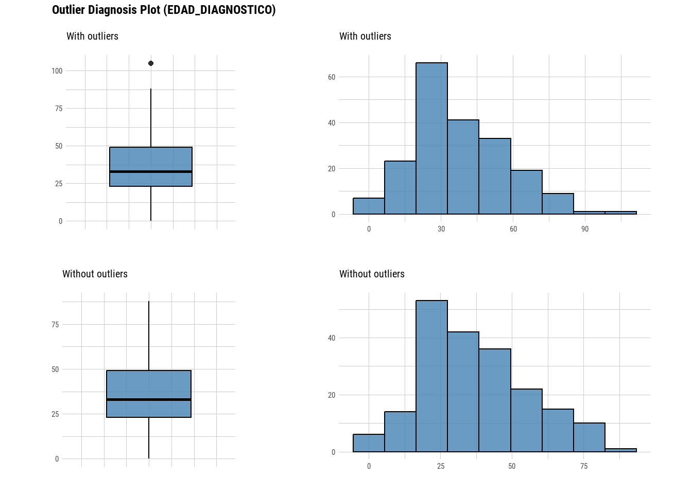
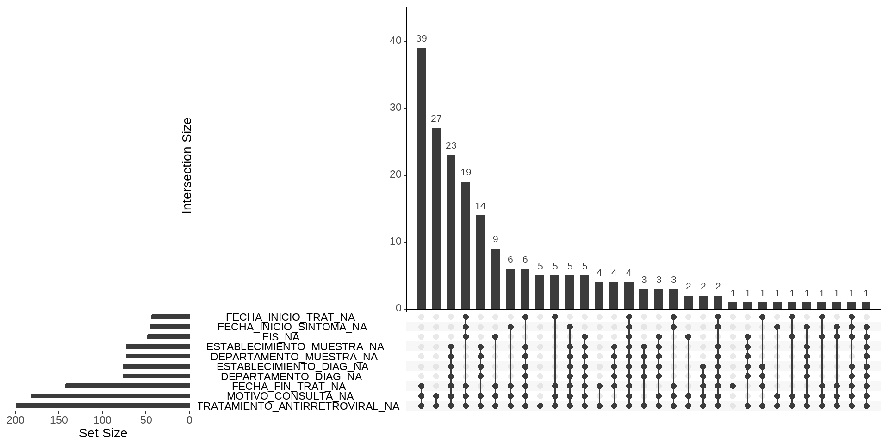

Unidad 3: Exploración, diagnóstico y limpieza de datos
En el ámbito de los proyectos de análisis de datos, el preprocesamiento, también conocido como preparación de datos, es una etapa crucial que precede al análisis propiamente dicho. Esta fase esencial tiene como objetivo acondicionar los datos para su posterior análisis, garantizando su confiabilidad e integridad.
Las tareas de preprocesamiento son específicas para cada conjunto de datos y dependen de los objetivos del proyecto y las técnicas de análisis que se emplearán. Sin embargo, existen tareas comunes que son aplicables a la mayoría de los casos, entre las que se encuentran el diagnóstico y la limpieza de datos.
Exploración y diagnóstico de datos
La etapa de diagnóstico de datos es fundamental para comprender la estructura y características del conjunto de datos que se va a analizar. Esta fase involucra una serie de tareas esenciales, como:
Análisis de la estructura de la tabla de datos: Esta tarea implica comprender la organización de los datos, identificando las variables, sus tipos de datos y la distribución de los registros. Es relevante vincular este proceso con el “diccionario de datos” de la tabla o base, ya sea de fuente secundaria o creada por nosotros mismos.
Verificación del tipo de dato de cada variable de interés: Es crucial determinar el tipo de dato de cada variable (numérica, categórica, fecha-hora, etc.) para aplicar las técnicas de análisis adecuadas.
Detección de valores faltantes: La presencia de valores faltantes puede afectar significativamente los resultados del análisis. Es importante identificar estos valores y determinar la mejor manera de manejarlos (eliminación, imputación, etc.).
Identificación de las categorías de las variables cualitativas: En el caso de variables categóricas, es necesario identificar las categorías existentes y evaluar su distribución.
Análisis de los mínimos y máximos de valores de cada variable cuantitativa: Para variables numéricas, es importante determinar los valores mínimos y máximos para detectar posibles valores atípicos o errores de entrada.
Exploración de datos
El primer paso en la exploración de un conjunto de datos es conocer su estructura y tamaño.
El tamaño está definido por la cantidad de observaciones (filas) y la cantidad de variables (columnas).
Llamamos estructura a la forma en se organizan sus variables, sus tipos de datos y sus categorías/valores.
Vamos a utilizar un dataframe de ejemplo con variedad en sus tipos de datos. Para ver su estructura en R base tenemos la función str()
Parece idéntica pero tiene una ventaja cuando la tabla de datos tiene muchas variables. La lista de respuesta de str() se trunca y no nos deja visualizar la totalidad de columnas, cosa que si hace glimpse().
Por otra parte vamos a encontrar distintas definiciones para los tipos de datos, del modo tidyverse:
num para a ser dbl (double): números reales
logi para a ser lgl (logical): valores lógicos
Y se incluyen un tipo nuevo:
dttm (date-time): fechas y horas
Esta exploración inicial de la estructura generalmente viene acompañada por el “diccionario de datos” (codebook) asociado a la tabla de datos, ya sea que esta tabla provenga de un proyecto de investigación propio (fuente primaria), producto de una fuente secundaria o de un sistema de vigilancia epidemiológica.
Comprobación y coerción de tipos de datos
La mayoría de las funciones producen un error cuando el tipo de datos que esperan no coincide con los que pasamos como argumentos. En esta situación seguiremos el siguiente camino:
Comprobar el tipo de datos utilizando las funciones is.*(), que nos responden con un valor lógico (TRUE si el tipo de dato coincide y FALSE si no lo hace). Si el tipo de dato coincide con el formato esperado por el argumento de la función, entonces podemos aplicarla, de lo contrario necesitaremos continuar:
Forzar el tipo de datos deseado coercionando con funciones de la familia as.*(), que fuerzan el tipo de datos, siempre y cuando esto devuelva valores correctos. Por ejemplo, no podremos obtener valores correctos si intento coercionar caracteres a tipos numéricos.
# Ejmeplo coercionando la variable sexo de caracter a factoras.factor(datos$sexo) # llamamos a la variable con el formato <dataframe>$<variable>
[1] M M M M M M M M <NA> F F M F F F
[16] F F M M M M M M F M F <NA> M F M
[31] F F M F F F M M M M M F M F M
[46] M F M F <NA> M M M F M M M M M F
[61] F M F F M M F F F M M M M M
Levels: F M
# detecta que hay dos niveles o categorías posibles (F y M) is.factor(as.factor(datos$sexo))
[1] TRUE
# nos confirma que los datos se coercionaron a factor
Transformar el tipo de dato a partir de aplicar funciones específicas incluidas en paquetes que gestionan datos especiales, como por ejemplo las fechas (el paquete lubridate del tidyverse, que conoceremos más adelante, se ocupa de esto)
A continuación se muestra una lista con los tipos más importantes que se pueden comprobar o forzar a partir de funciones de R base:
Tipo
Comprobación
Coerción
character
is.character()
as.character()
numeric
is.numeric()
as.numeric()
integer
is.integer()
as.integer()
double
is.double()
as.double()
factor
is.factor()
as.factor()
logical
is.logical()
as.logical()
NA
is.na()
as.na()
Skimr
Existen diversas herramientas y funciones que facilitan la etapa de diagnóstico de datos, es el caso de skimr.
Este paquete tiene funciones diseñadas para obtener un resumen rápido de la estructura de tablas de datos y son compatibles con el ecosistema tidyverse.
La función principal del paquete es skim y puede ser aplicada a todo el dataframe o bien a una variable o a un grupo de ellas.
Proporciona un conjunto más amplio de estadísticas que summary(), incluyendo valores faltantes, completos, número total (n) y desvío estándar (sd).
Informa de cada tipo de dato por separado.
Maneja fechas, valores lógicos y otros tipos.
Trabajemos con skimr sobre un conjunto de datos provenientes de la vigilancia del SNVS.
library(skimr)skim(datos)
Data summary
Name
datos
Number of rows
200
Number of columns
56
_______________________
Column type frequency:
character
47
Date
7
logical
1
numeric
1
________________________
Group variables
None
Variable type: character
skim_variable
n_missing
complete_rate
min
max
empty
n_unique
whitespace
SEXO
0
1.00
1
1
0
3
0
GRUPEDAD
0
1.00
3
5
0
18
0
PROVINCIA_RESIDENCIA
0
1.00
4
16
0
18
0
ID_PROV_INDEC_RESIDENCIA
0
1.00
2
2
0
18
0
DEPARTAMENTO_RESIDENCIA
9
0.96
4
26
0
81
0
ID_DEPTO_INDEC_RESIDENCIA
0
1.00
2
5
0
89
0
LOCALIDAD_RESIDENCIA
0
1.00
4
57
0
106
0
ESTABLECIMIENTO_SALUD
0
1.00
11
82
0
125
0
ESTABLECIMIENTO_CARGA
0
1.00
5
82
0
117
0
PROVINCIA_CARGA
0
1.00
4
16
0
17
0
DEPTO_CARGA
0
1.00
4
22
0
70
0
ESTAB_CLINICA
20
0.90
11
76
0
112
0
DEPTO_CLINICA
20
0.90
4
23
0
73
0
PPL
0
1.00
2
2
0
2
0
SERVICIO_PENITENCIARIO
0
1.00
2
19
0
7
0
MOTIVO_CONSULTA
181
0.09
8
24
0
3
0
CLASIFICACION_MANUAL
0
1.00
10
67
0
9
0
CLASIF_INICIO_TRAT
0
1.00
5
34
0
6
0
ID_PULMONAR
0
1.00
2
15
0
3
0
ID_EXTRAPULMONAR
0
1.00
5
31
0
13
0
RESULTADO_RX
0
1.00
9
28
0
8
0
Bacteriologia
0
1.00
8
15
0
3
0
Baciloscopia
0
1.00
8
15
0
6
0
Cultivo
0
1.00
8
26
0
7
0
PRUEBA_RESISTENCIA
0
1.00
2
15
0
2
0
RESISTENCIA
0
1.00
15
25
0
4
0
Droga
0
1.00
2
26
0
6
0
Tipo_Resistencia
0
1.00
2
10
0
4
0
ESTABLECIMIENTO_MUESTRA
72
0.64
5
102
0
73
0
DEPARTAMENTO_MUESTRA
72
0.64
5
32
0
46
0
ESTABLECIMIENTO_DIAG
76
0.62
5
160
0
62
0
DEPARTAMENTO_DIAG
76
0.62
5
37
0
39
0
Prueba_VIH
0
1.00
2
15
0
2
0
VIH
0
1.00
8
15
0
3
0
TRATAMIENTO_ANTIRRETROVIRAL
199
0.01
2
2
0
1
0
Diag_rapido
0
1.00
2
2
0
2
0
Resultado_diag_rapido
0
1.00
15
62
0
9
0
EMBARAZO
0
1.00
2
15
0
3
0
DIABETES
0
1.00
2
2
0
2
0
CONSUMO_PROB_DROGAS
0
1.00
2
15
0
2
0
ENF_RESP_CRONICA
0
1.00
2
15
0
2
0
COVID
199
0.01
2
2
0
1
0
SE_DECLARA_PUEBLO_INDIGENA
0
1.00
2
15
0
2
0
TABAQUISMO
0
1.00
2
15
0
2
0
ALCOHOLISMO
0
1.00
2
15
0
2
0
ESTAB_TTO
35
0.82
11
76
0
102
0
RESULTADO_TRATAMIENTO
0
1.00
6
22
0
7
0
Variable type: Date
skim_variable
n_missing
complete_rate
min
max
median
n_unique
FECHA_NACIMIENTO
0
1.00
1934-12-13
2023-05-05
1989-07-27
198
FECHA_APERTURA
0
1.00
2021-09-20
2024-04-18
2023-07-16
151
FECHA_NOTIFICACION
0
1.00
2023-01-03
2023-12-27
2023-07-03
147
FIS
48
0.76
2020-12-20
2023-12-21
2023-05-12
116
FECHA_INICIO_SINTOMA
44
0.78
2022-08-15
2023-12-26
2023-05-17
116
FECHA_INICIO_TRAT
43
0.78
2023-01-03
2024-01-08
2023-07-02
119
FECHA_FIN_TRAT
142
0.29
2023-03-09
2024-04-05
2023-10-23
52
Variable type: logical
skim_variable
n_missing
complete_rate
mean
count
ETNIA
200
0
NaN
:
Variable type: numeric
skim_variable
n_missing
complete_rate
mean
sd
p0
p25
p50
p75
p100
hist
EDAD_DIAGNOSTICO
0
1
37.02
18.63
0
23
33
49
88
▂▇▅▃▁
La salida completa de skim() separa los resultados por partes. Un resumen de datos inicial, donde vemos la cantidad de filas y columnas con la frecuencia de tipo de variable. Luego le siguen tablas con información descriptiva univariada, donde podemos ver que dependiendo del tipo de variable nos muestra diferentes estadísticos y hasta un mini histograma en el caso de las numéricas.
dlookr
El paquete se define como una “colección de herramientas que permiten el diagnóstico, la exploración y la transformación de datos”.
El diagnóstico de datos proporciona información y visualización de valores faltantes, valores atípicos y valores únicos y negativos para ayudarle a comprender la distribución y la calidad de sus datos.
Contiene funciones, compatibles con tidyverse, que nos facilitan ver la calidad de nuestros datos, además de otras que tienen por objetivo la exploración y su transformación.
Entre estas funciones encontramos:
diagnose()
Permite diagnosticar variables del dataframe y devuelve como resultado: el tipo de dato de la variable, la cantidad de valores faltantes, su porcentaje, la cantidad de valores únicos y su tasa (valores únicos/observaciones). Lo observamos en forma de tabla interactiva:
library(dlookr)diagnose(datos)
Al ser compatible con tidyverse se puede editar antes o después de la función, por ejemplo si quisiéramos filtrar variables con valores faltantes (de mayor a menor):
# A tibble: 16 × 4
variables types missing_count missing_percent
<chr> <chr> <int> <dbl>
1 ETNIA logical 200 100
2 TRATAMIENTO_ANTIRRETROVIRAL character 199 99.5
3 COVID character 199 99.5
4 MOTIVO_CONSULTA character 181 90.5
5 FECHA_FIN_TRAT Date 142 71
6 ESTABLECIMIENTO_DIAG character 76 38
7 DEPARTAMENTO_DIAG character 76 38
8 ESTABLECIMIENTO_MUESTRA character 72 36
9 DEPARTAMENTO_MUESTRA character 72 36
10 FIS Date 48 24
11 FECHA_INICIO_SINTOMA Date 44 22
12 FECHA_INICIO_TRAT Date 43 21.5
13 ESTAB_TTO character 35 17.5
14 ESTAB_CLINICA character 20 10
15 DEPTO_CLINICA character 20 10
16 DEPARTAMENTO_RESIDENCIA character 9 4.5
diagnose_category()
Así como existe diagnose() como una función general, también hay funciones que sirven para el diagnóstico específico por tipo de dato.
diagnose_category() lo hace con las variables categóricas, es decir de caracter, de factor y de factor ordenado, mostrando información de cada categoría de cada variable (N, frecuencia, proporción y ranking).
datos|>diagnose_category()
diagnose_numeric()
Para variables numéricas tenemos a diagnose_numeric() que nos brinda estadísticos resumen descriptivos univariados.
datos|>diagnose_numeric()
Observamos que sobre la única variable numérica de datos nos calcula el mínimo, primer cuartil, media, mediana, tercer cuartil, máximo, la cantidad de ceros, la cantidad de números negativos y la cantidad de datos atípicos.
diagnose_outlier()
Sobre los datos atípicos diagnose_outlier() nos amplía la información:
datos|>diagnose_outlier()
Aquí la variable EDAD_DIAGNOSTICO no tiene datos atípicos por lo que el conteo y proporción es de cero, la media de los outlier no existe y la media contando y no contando estos outlier da lo mismo (37,02)
plot_outlier()
Agreguemos algún dato atípico a EDAD_DIAGNOSTICO para poder mostrar este gráfico.
datos[10, "EDAD_DIAGNOSTICO"] <-105# cambiamos la edad de la observación 10
datos |>plot_outlier(EDAD_DIAGNOSTICO)

El gráfico siempre se va a producir si al menos tenemos un dato atípico en la variable. Grafica un boxplot e histograma contando los valores outlier que la variable tenga y otro quitándolos.
Otras funciones del paquete
dlookr tiene muchas otras funciones, para la conversión de datos y/o la imputación de datos ausentes, que no trabajaremos en el curso pero pueden encontrarse en el sitio del desarrollador https://choonghyunryu.github.io/dlookr/index.html
Depuración de datos
Una vez finalizado el diagnóstico de datos, se procede a la etapa de depuración, donde se corrigen los errores identificados y se prepara el conjunto de datos para su análisis. La depuración involucra técnicas como la eliminación de valores faltantes, la corrección de errores de entrada, la transformación de variables y el manejo de valores atípicos.
Un flujo de trabajo modelo partiendo de datos crudos y terminando en datos limpios es el siguiente:
Durante este proceso puede haber múltiples situaciones dependiendo de la calidad original de los datos crudos, desde carecer de encabezados o contener tipos de datos incorrectos, pasando por tener que corregir etiquetas de categorías incorrectas, etc.
Las herramientas de dplyr en tidyverse nos van a facilitar esta tarea que suele ocupar entre un 70 y 80% del tiempo de trabajo cuando analizamos datos.
Gestión de duplicados
Un caso habitual con el que debemos lidiar es el tener observaciones duplicadas, total o parcialmente. Por este motivo, debemos conocer las características de la o las tablas con las que estamos trabajando, es decir, si las observaciones tiene claves unívocas, si estas observaciones se pueden repetir, si la relación es uno a uno o uno a varios cuando hay más de una tabla relacionada, etc.
Entonces, el primer paso será asegurarnos que los datos cumplen con el criterio que conocemos haciendo una detección de observaciones y/o partes de observaciones (variables clave) que se encuentran duplicadas.
Luego, hay diferentes tareas que se pueden realizar para gestionar estos datos duplicados, cuando su existencia no es la esperada:
Eliminación de duplicados a partir de observaciones únicas.
Recortar tabla de datos para eliminar duplicados
Marcar duplicados (conservando duplicados en la tabla)
La función get_dupes() del paquete janitor es muy útil porque identifica estas repeticiones.
Aplicada sobre el dataframe entero detecta aquellas observaciones que sean iguales en todas sus observaciones. Esto es difícil que pase pero puede suceder cuando por alguna falla técnica el sistema desde donde se obtienen los datos duplica registros completos.
Otra posibilidad es utilizar la variable que es clave en la tabla de datos o las variables que constituyen una clave combinada.
Por ejemplo, en este caso, usemos una serie de variables como SEXO, FECHA_NACIMIENTO, ID_PROV_INDEC_RESIDENCIA e ID_DEPTO_INDEC_RESIDENCIA para ver si hay observaciones donde estos datos se repitan.
datos |>get_dupes(SEXO, FECHA_NACIMIENTO, ID_PROV_INDEC_RESIDENCIA, ID_DEPTO_INDEC_RESIDENCIA)
Encontramos dos observaciones que tienen los mismo valores en esta combinación de variables. Un hombre nacido el 29/06/1947 en la provincia de Tucumán, en el departamento Lules.
Supongamos que no puede existir dos veces la misma persona en la tabla (sería deseable confirmar esto teniendo alguna variable univoca cómo el DNI, por ejemplo), procederíamos a solucionar este duplicado.
Eliminación de duplicados por observaciones únicas
Para eliminar filas duplicadas en una tabla de datos podemos utilizar la función distinct() de dplyr.
La función tiene un argumento denominado .keep_all que permite valores TRUE o FALSE. Si se iguala a TRUE se mantienen en el resultado todas las variables que son parte de la tabla, aunque estas no estén declaradas dentro del distinct().
Por defecto, este argumento se encuentra igualado a FALSE.
nrow(datos)
[1] 200
datos |>distinct(SEXO, FECHA_NACIMIENTO, ID_PROV_INDEC_RESIDENCIA, ID_DEPTO_INDEC_RESIDENCIA, .keep_all = T)
# A tibble: 199 × 56
SEXO FECHA_NACIMIENTO EDAD_DIAGNOSTICO GRUPEDAD PROVINCIA_RESIDENCIA
<chr> <date> <dbl> <chr> <chr>
1 M 1948-06-22 74 70-74 Tierra del Fuego
2 F 1981-06-20 41 40-44 Buenos Aires
3 F 1989-03-30 33 30-34 Buenos Aires
4 M 2006-11-17 16 15-19 Chaco
5 M 1993-06-02 29 25-29 Jujuy
6 M 1989-04-08 33 30-34 Buenos Aires
7 F 1977-07-30 45 45-49 Buenos Aires
8 M 1968-04-09 54 50-54 Misiones
9 F 2008-01-10 15 15-19 Chaco
10 M 1987-11-27 105 35-39 Buenos Aires
# ℹ 189 more rows
# ℹ 51 more variables: ID_PROV_INDEC_RESIDENCIA <chr>,
# DEPARTAMENTO_RESIDENCIA <chr>, ID_DEPTO_INDEC_RESIDENCIA <chr>,
# LOCALIDAD_RESIDENCIA <chr>, ESTABLECIMIENTO_SALUD <chr>,
# ESTABLECIMIENTO_CARGA <chr>, PROVINCIA_CARGA <chr>, DEPTO_CARGA <chr>,
# ESTAB_CLINICA <chr>, DEPTO_CLINICA <chr>, PPL <chr>,
# SERVICIO_PENITENCIARIO <chr>, FECHA_APERTURA <date>, …
Observamos que las 200 observaciones distinct() nos devuelve 199. Eliminó una de las dos que tenían duplicadas esa serie de variables definidas (no podemos controlar cuál de ellas elimina).
Eliminación de duplicados por recorte de observaciones
Recortar es similar a filtrar, la diferencia está en que se filtra por condiciones y recortamos por posiciones.
La familia de funciones de dplyr que se puede utilizar para recortar es slice_*().
Estas funciones pueden ser muy útiles si se aplican a un dataframe agrupado porque la operación de recorte se realiza en cada grupo por separado.
Por ejemplo, podemos usar la FECHA_NOTIFICACION para seleccionar la mas vieja. Esto se hace combinado group_by() y slice_min() (observación con el valor mínimo)
datos |>get_dupes(SEXO, FECHA_NACIMIENTO, ID_PROV_INDEC_RESIDENCIA, ID_DEPTO_INDEC_RESIDENCIA) |>select(SEXO, FECHA_NACIMIENTO, FECHA_NOTIFICACION)
# A tibble: 2 × 3
SEXO FECHA_NACIMIENTO FECHA_NOTIFICACION
<chr> <date> <date>
1 M 1947-06-29 2023-03-10
2 M 1947-06-29 2023-02-24
# A tibble: 1 × 5
ID_PROV_INDEC_RESIDENCIA ID_DEPTO_INDEC_RESIDENCIA SEXO FECHA_NACIMIENTO
<chr> <chr> <chr> <date>
1 90 90063 M 1947-06-29
# ℹ 1 more variable: FECHA_NOTIFICACION <date>
Marcar duplicados
Si, en cambio, lo que buscamos es mantener a todas las observaciones de la tabla pero marcar aquellos que consideramos duplicados podemos hacer:
Recortar el dataframe original a sólo las filas para el análisis. Guardar los ID de este dataframe reducido en un vector.
En el dataframe original, creamos una variable de marca usando una función condicional, basándonos si el ID está presente en el dataframe reducido (vector de ID anterior).
Primer paso, en esta tabla no existe un ID único por lo que vamos a crear una clave subrogada.
datos <- datos |>mutate(ID =row_number())
Ahora usaremos este ID para crear un vector con los números de las dos observaciones anteriores que están duplicadas.
ID_duplicados <- datos |>get_dupes(SEXO, FECHA_NACIMIENTO, ID_PROV_INDEC_RESIDENCIA, ID_DEPTO_INDEC_RESIDENCIA) |>pull(ID)ID_duplicados
[1] 44 166
Finalmente aplicamos este vector con una función como if_else() para marcar con una X en la variable duplicado.
datos <- datos |>mutate(duplicado =if_else(ID %in% ID_duplicados, "X", NA))
Luego podriamos filtrar los duplicados directamente
Cuando trabajamos con datos los valores perdidos o faltantes (conocidos en inglés como missing) pueden constituir un serio problema en nuestras variables por lo que deben explorarse y manejarse cuidadosamente en las etapas iniciales del análisis.
Estos datos pueden faltar por muchas razones, pero generalmente se suelen agrupar en dos categorías: valores faltantes informativos y valores faltantes aleatorios. Los informativos implican una causa estructural, ya sea por deficiencias en la forma en que se recopilaron los datos o por anomalías en el entorno de observación. Los aleatorios son aquellos que tienen lugar independientemente del proceso de recopilación de datos.
Dependiendo de si los valores faltantes son de uno u otro tipo, se procederá de una u otra manera. A los informativos, en general, se les puede asignar un valor concreto (por ejemplo, “Ninguno” o “Sin dato”), ya que este valor puede convenir tenerlo como una categoría más de la variable. Los aleatorios, en cambio, pueden manejarse mediante la eliminación o la imputación.
Resumiendo, las tareas habituales respecto a estos valores consisten en:
Evaluar la existencia de valores perdidos (exploración y conteo).
Excluir los valores ausentes (si es posible y conveniente).
Etiquetar o recodificar los valores ausentes (imputación de datos).
Respecto a la imputación existen numerosa bibliografía sobre diversos algoritmos que no vamos a incluir en este curso.
El lenguaje R gestiona a los datos perdidos mediante el valor especial reservado NA de Not Available (No disponible),
En principio, sólo vamos a enfocarnos en como podemos utilizar algunas funciones del lenguaje para detectarlos y contabilizarlos. A partir de su identificación decidiremos que hacer con ellos, dependiendo de su cantidad y extensión, es decir, si los valores faltantes son la mayoría de una variable o la mayoría de una observación o bien si representan la falta de respuesta de una pregunta, con lo cual convenga etiquetarlos.
Una manera de abordar esta tarea con R base para una variables es hacer la sumatoria de valores NA, usando la función de identificación is.na().
Para ejemplificar, tomamos una tabla de datos de vigilancia con 200 observaciones y 56 variables.
datos |>summarise(Cantidad_NA =sum(is.na(FECHA_FIN_TRAT)))
# A tibble: 1 × 1
Cantidad_NA
<int>
1 142
La consulta dice que hay 142 observaciones vacías en la variable FECHA_FIN_TRAT. Lo malo es que debemos hacer esta tarea variable por variable, lo que resulta muy trabajoso.
También la función summary() aplicada sobre el dataframe completo informa la cantidad de NA de variables cuantitativas, lógicas y fecha, pero no lo hace con las de tipo caracter.
summary(datos)
SEXO FECHA_NACIMIENTO EDAD_DIAGNOSTICO GRUPEDAD
Length:200 Min. :1934-12-13 Min. : 0.00 Length:200
Class :character 1st Qu.:1973-11-06 1st Qu.: 23.00 Class :character
Mode :character Median :1989-07-27 Median : 33.00 Mode :character
Mean :1985-12-04 Mean : 37.37
3rd Qu.:1999-11-17 3rd Qu.: 49.00
Max. :2023-05-05 Max. :105.00
PROVINCIA_RESIDENCIA ID_PROV_INDEC_RESIDENCIA DEPARTAMENTO_RESIDENCIA
Length:200 Length:200 Length:200
Class :character Class :character Class :character
Mode :character Mode :character Mode :character
ID_DEPTO_INDEC_RESIDENCIA LOCALIDAD_RESIDENCIA ESTABLECIMIENTO_SALUD
Length:200 Length:200 Length:200
Class :character Class :character Class :character
Mode :character Mode :character Mode :character
ESTABLECIMIENTO_CARGA PROVINCIA_CARGA DEPTO_CARGA ESTAB_CLINICA
Length:200 Length:200 Length:200 Length:200
Class :character Class :character Class :character Class :character
Mode :character Mode :character Mode :character Mode :character
DEPTO_CLINICA PPL SERVICIO_PENITENCIARIO
Length:200 Length:200 Length:200
Class :character Class :character Class :character
Mode :character Mode :character Mode :character
FECHA_APERTURA FECHA_NOTIFICACION MOTIVO_CONSULTA
Min. :2021-09-20 Min. :2023-01-03 Length:200
1st Qu.:2023-04-12 1st Qu.:2023-04-03 Class :character
Median :2023-07-16 Median :2023-07-03 Mode :character
Mean :2023-07-14 Mean :2023-07-01
3rd Qu.:2023-10-18 3rd Qu.:2023-10-03
Max. :2024-04-18 Max. :2023-12-27
CLASIFICACION_MANUAL CLASIF_INICIO_TRAT ID_PULMONAR
Length:200 Length:200 Length:200
Class :character Class :character Class :character
Mode :character Mode :character Mode :character
FIS ID_EXTRAPULMONAR FECHA_INICIO_SINTOMA
Min. :2020-12-20 Length:200 Min. :2022-08-15
1st Qu.:2023-02-20 Class :character 1st Qu.:2023-03-01
Median :2023-05-12 Mode :character Median :2023-05-17
Mean :2023-05-10 Mean :2023-05-28
3rd Qu.:2023-08-09 3rd Qu.:2023-08-09
Max. :2023-12-21 Max. :2023-12-26
NA's :48 NA's :44
RESULTADO_RX Bacteriologia Baciloscopia Cultivo
Length:200 Length:200 Length:200 Length:200
Class :character Class :character Class :character Class :character
Mode :character Mode :character Mode :character Mode :character
PRUEBA_RESISTENCIA RESISTENCIA Droga Tipo_Resistencia
Length:200 Length:200 Length:200 Length:200
Class :character Class :character Class :character Class :character
Mode :character Mode :character Mode :character Mode :character
ESTABLECIMIENTO_MUESTRA DEPARTAMENTO_MUESTRA ESTABLECIMIENTO_DIAG
Length:200 Length:200 Length:200
Class :character Class :character Class :character
Mode :character Mode :character Mode :character
DEPARTAMENTO_DIAG Prueba_VIH VIH
Length:200 Length:200 Length:200
Class :character Class :character Class :character
Mode :character Mode :character Mode :character
TRATAMIENTO_ANTIRRETROVIRAL Diag_rapido Resultado_diag_rapido
Length:200 Length:200 Length:200
Class :character Class :character Class :character
Mode :character Mode :character Mode :character
EMBARAZO DIABETES CONSUMO_PROB_DROGAS ENF_RESP_CRONICA
Length:200 Length:200 Length:200 Length:200
Class :character Class :character Class :character Class :character
Mode :character Mode :character Mode :character Mode :character
COVID SE_DECLARA_PUEBLO_INDIGENA ETNIA
Length:200 Length:200 Mode:logical
Class :character Class :character NA's:200
Mode :character Mode :character
TABAQUISMO ALCOHOLISMO ESTAB_TTO FECHA_INICIO_TRAT
Length:200 Length:200 Length:200 Min. :2023-01-03
Class :character Class :character Class :character 1st Qu.:2023-03-20
Mode :character Mode :character Mode :character Median :2023-07-02
Mean :2023-06-28
3rd Qu.:2023-10-05
Max. :2024-01-08
NA's :43
FECHA_FIN_TRAT RESULTADO_TRATAMIENTO ID duplicado
Min. :2023-03-09 Length:200 Min. : 1.00 Length:200
1st Qu.:2023-08-21 Class :character 1st Qu.: 50.75 Class :character
Median :2023-10-23 Mode :character Median :100.50 Mode :character
Mean :2023-10-23 Mean :100.50
3rd Qu.:2024-01-11 3rd Qu.:150.25
Max. :2024-04-05 Max. :200.00
NA's :142
Más completo y en una sola línea la función find_na() del paquete dlookr muestra el porcentaje de valores perdidos en todas las variables de una tabla de datos y se complementa con el gráfico de barras de pareto plot_na_pareto().
library(dlookr)find_na(datos, rate = T) # argumento rate = T muestra % de valores NA
plot_na_pareto(datos, only_na = T) # argumento only_na = T muestra variables solo con algún valor NA
Gestión de NA’s con naniar
El paquete naniar es un paquete que reúne funciones diseñadas para el manejo de valores faltantes pensado para una gestión completa.
library(naniar)
Adjuntando el paquete: 'naniar'
The following object is masked from 'package:skimr':
n_complete
Sus caracteristicas generales son:
Proporciona funciones analíticas y visuales de detección y gestión
Es compatible con el mundo “tidy” de tidyverse
Aborda las relaciones o estructura de la falta de datos.
Posibilita el trabajo de imputación (no tratado en este curso)
De las muchas funciones que tiene el paquete seleccionamos algunas para mostrar que son muy útiles para una tarea básica.
La función miss_var_summary() proporciona un resumen sobre los valores NA en cada variable del dataframe similar a find_na() que vimos anterioremente pero con una salida en forma de tabla y un recento absoluto, además de porcentual.
Por el lado gráfico, ofrece la función gg_miss_var() que representa la información de la tabla anterior pero a través de un gráfico lollipop horizontal de tipo ggplot2.
gg_miss_var(datos, show_pct = T) # muestra valores en porcentajes
Hay otra viaulización muy interesante porque muestra las relaciones de los valores ausentes de las variables cuya función se llama gg_miss_upset() y genera un gráfico Upset en función de la existencia de valores NA.
gg_miss_upset(datos)
Por defecto, construye el gráfico tomando las primeras 10 variables de la tabla de datos con valores NA de forma decreciente. Esto se puede modificar cambiando el argumentos nset =.
Tiene dos entradas para su lectura. En la parte inferior izquierda nos muestra los nombres de las variables con valores NA ordenadas de menor a mayor medida en una escala absoluta. El gráfico de barras principal, ordenado de forma predeterminada de mayor a menor, informa sobre las cantidades absolutas de valores NA de las combinaciones que aperecen debajo del eje x del gráfico.
Por ejemplo, la variable ETNIA tiene todos sus observaciones como NA y la variable COVID casi lo mismo, mientras que la variable FIS cerca de 50.
Podemos eliminar del gráfico a esas dos variables con casi todos los valores NA, usando formas de tidyverse previas dado que las funciones de naniar son compatibles.
datos |>select(-ETNIA, -COVID) |>gg_miss_upset()

Al quitar esas dos variables, aparecen dos nuevas con cantidades menores de NA que FIS (FECHA_INICIO_TRAT y FECHA_INICIO_SINTOMA), es decir siguen siendo 10 por defecto.
Si miramos los datos faltantes con estructura notamos que la combinación más frecuente de NA combinados es FECHA_FIN_TRAT, MOTIVO_CONSULTA y TRATAMIENTO_ANTIRETROVIRAL con 39 observaciones a las que le faltan valores en las tres variables simultáneamente.
Reemplazo de valores
El paquete tiene además dos funciones de reemplazo que funcionan como herramientas antagónicas.
replace_with_na() reemplaza valores o etiquetas específicas con valores NA y replace_na_with() hace lo contrario, reemplaza valores NA con valores específicos, como “Sin dato” por ejemplo.
La primera función trabaja sobre el dataframe completo adignando valores NA en la categoría o valor que le indiquemos.
Por ejemplo, la variable ID_PROV_INDEC_RESIDENCIA no tiene valores perdidos pero si hay una categoría/código desconocido (“00”), entonces podemos decirle que ese código sea NA.
datos |>summarise(Cantidad_NA =sum(is.na(ID_PROV_INDEC_RESIDENCIA)))
# A tibble: 1 × 1
Cantidad_NA
<int>
1 0
datos |>replace_with_na(replace =list(ID_PROV_INDEC_RESIDENCIA ="00")) |>summarise(Cantidad_NA =sum(is.na(ID_PROV_INDEC_RESIDENCIA)))
# A tibble: 1 × 1
Cantidad_NA
<int>
1 2
replace_na_with() etiqueta valores faltantes con categorías definidas que serán tenidas en cuenta a la hora de hacer tablas u otras operaciones. Esta función se utiliza dentro de mutate() del tidyverse.
La variable MOTIVO_CONSULTA tiene 181 valores NA que serán etiquetados como “Sin dato” de esta forma:
datos |>count(MOTIVO_CONSULTA)
# A tibble: 4 × 2
MOTIVO_CONSULTA n
<chr> <int>
1 Contacto 2
2 Examen de Salud 1
3 Sintomático Respiratorio 16
4 <NA> 181
datos |>mutate(MOTIVO_CONSULTA =replace_na_with(MOTIVO_CONSULTA, "Sin dato")) |>count(MOTIVO_CONSULTA)
# A tibble: 4 × 2
MOTIVO_CONSULTA n
<chr> <int>
1 Contacto 2
2 Examen de Salud 1
3 Sin dato 181
4 Sintomático Respiratorio 16
Eliminación de valores NA
Cuando decidimos eliminar valores NA de alguna variable, salvo que se quite la variable entera, tenemos que tener en cuenta que perdemos la observación completa, incluso valores válidos que se encuentran en otras variables.
R base tiene una función llamada na.omit() que omite toda observación donde al menos haya un solo NA en alguna variable.
Aplicar esta función sobre el dataframe datos produce que no quede ninguna observación, dado que vimos que la variable ETNIA tenía sus doscientos valores vacíos.
Una función superadora es drop_na() de tidyr que pertenece a tidyverse, porque omite observaciones que tengan variables que definamos, por ejemplo:
# A tibble: 152 × 58
SEXO FECHA_NACIMIENTO EDAD_DIAGNOSTICO GRUPEDAD PROVINCIA_RESIDENCIA
<chr> <date> <dbl> <chr> <chr>
1 M 1948-06-22 74 70-74 Tierra del Fuego
2 F 1981-06-20 41 40-44 Buenos Aires
3 F 1989-03-30 33 30-34 Buenos Aires
4 M 2006-11-17 16 15-19 Chaco
5 M 1993-06-02 29 25-29 Jujuy
6 M 1989-04-08 33 30-34 Buenos Aires
7 F 1977-07-30 45 45-49 Buenos Aires
8 F 2008-01-10 15 15-19 Chaco
9 M 1987-11-27 105 35-39 Buenos Aires
10 F 2002-12-21 20 20-24 Buenos Aires
# ℹ 142 more rows
# ℹ 53 more variables: ID_PROV_INDEC_RESIDENCIA <chr>,
# DEPARTAMENTO_RESIDENCIA <chr>, ID_DEPTO_INDEC_RESIDENCIA <chr>,
# LOCALIDAD_RESIDENCIA <chr>, ESTABLECIMIENTO_SALUD <chr>,
# ESTABLECIMIENTO_CARGA <chr>, PROVINCIA_CARGA <chr>, DEPTO_CARGA <chr>,
# ESTAB_CLINICA <chr>, DEPTO_CLINICA <chr>, PPL <chr>,
# SERVICIO_PENITENCIARIO <chr>, FECHA_APERTURA <date>, …
En el ejemplo anterior aplicamos la función sobre la variable ETNIA y FIS, en el primer caso omite todas las observaciones y en el segundo caso 48 observaciones, mostrando las 152 restantes sin NA en la variable.
Por último, debemos saber que eliminar observaciones por valores faltantes reduce la potencia de cualquier test de hipotesis o modelo que hagamos porque se reduce el tamaño de la muestra.

 Por defecto, construye el gráfico tomando las primeras 10 variables de la tabla de datos con valores NA de forma decreciente. Esto se puede modificar cambiando el argumentos
Por defecto, construye el gráfico tomando las primeras 10 variables de la tabla de datos con valores NA de forma decreciente. Esto se puede modificar cambiando el argumentos